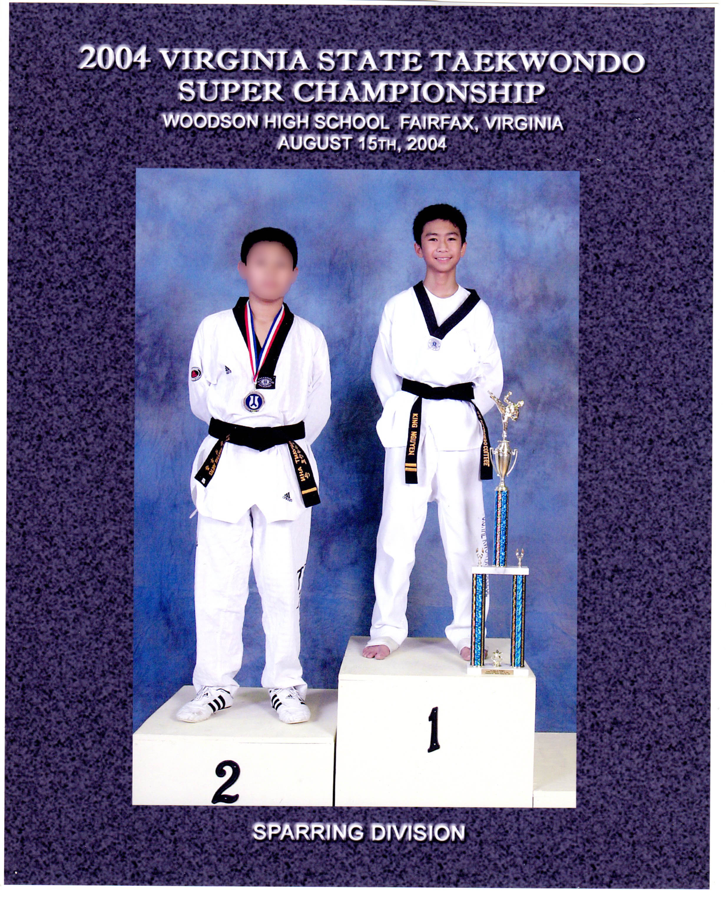

Charyut (Attention)!
Hi, My name is King Nguyen and I am a 3rd degree black belt in Tae Kwon Do. I started Tae Kwon Do when I was 9 years old and have been attending classes until 2013. While attending classes at my school, U.S. Tae Kwon Do College in Chantilly, VA, I have gained and developed new skills in forms, sparring, self-defense, and the language of Korea. By being in the top of my classes, I got the opportunity to compete in different tournaments where I have won trophies and medals. When my school would hold it;s own tornament, me and a couple of my classmates would perform and demonstrate our skills to the audience and the lower level belts. Currently I have stopped attending Tae Kwon Do, because I am focusing on school. Perhaps after I graduate, I will think about going back to Tae Kwon Do and start practicing some more so I can start competing again.

2000 U.S.T.C Tournament. Chantilly VA
2000 U.S.T.C Tournament. Chantilly, VA
2000 U.S.T.C Tournament. Chantilly, VA
2001 U.S.T.C Tournament. Chantilly, VA
2004 VA Unity- TKD Festival. Chantilly, VA
2004 VA Unity- TKD Festival. Annandale, VA
2004 VA Unity- TKD Festival. Annandale, VA
2005 VA Unity- TKD Festival. Annandale, VA
2005 VA Junior Olympics. Tysons Corner, VA
2006 VA Junior Olympics. Tysons Corner, VA